Native macOS editorSwiftmacOS 15+
Show your
work.
Veenie is a video editor for devlogs and motion graphics. Record your screen, script scenes in TypeScript, build shaders from nodes, stage a story on a desktop you control, and export exactly what you saw in the preview.
Made in Veenie, start to finish.
Every chapter of that film is a clip on a Veenie timeline: script scenes, a screen recording, a shader graph and a staged desktop. It was rendered and exported by Veenie's own compositor. This is its project file.
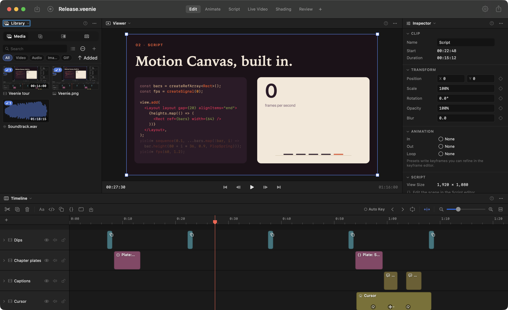
01 — Record
Record once. Fix it afterwards.
Press ⇧⌘R and capture a display or a window at native resolution. The cursor goes on its own track, so Veenie can redraw it smoothly, generate zooms from your clicks, and let you change all of it after the take.
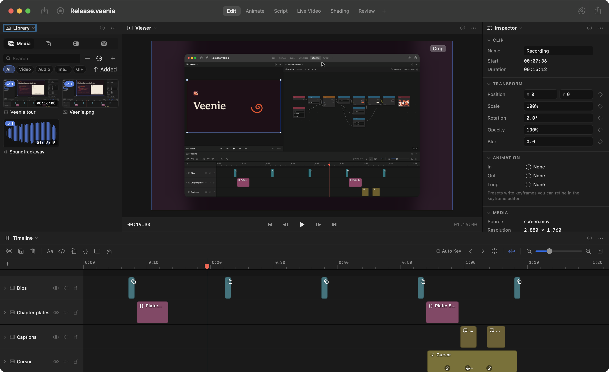
- Video
- HEVC or ProRes at native resolution
- Audio
- System audio, and the mic on its own track
- Camera
- Optional, shown as a webcam bubble
- Cursor
- Tracked at 120 Hz, redrawn with motion blur and click bounce
- After the take
- Backdrop, padding, corners, crop, callouts, zooms and speed regions
- Canvas
- 16:9, 9:16, 1:1 or 4:5, in one click
02 — Script
Motion Canvas, built in.
Write scenes in TypeScript and JSX with signals, generator flow, flex layout, springs, code morphing and line selection. Scenes are simulated once and drawn at output resolution, so they stay sharp at any export size.
Prefer not to write code? Switch any scene to Nodes and wire objects, animations and values together. It compiles to the same script.
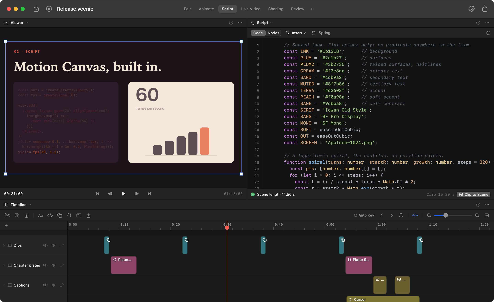
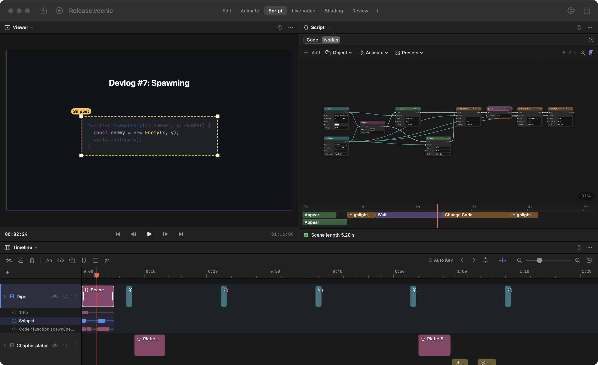
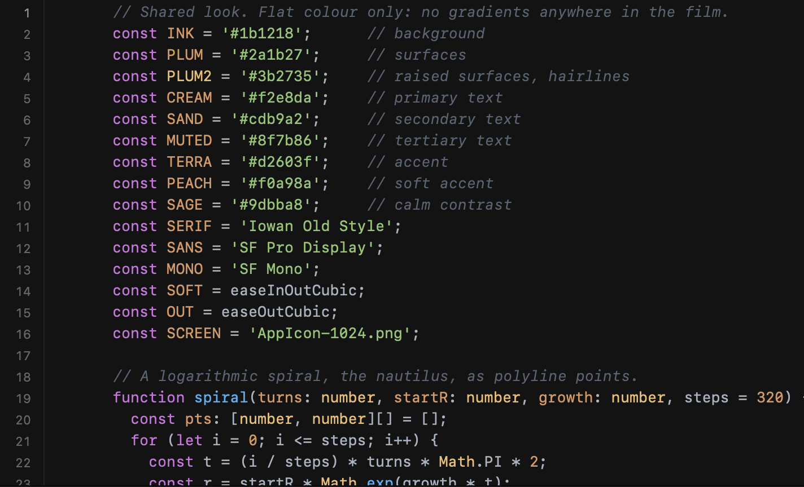
03 — Shade
Shaders, wired by hand.
Build shaders as a graph of nodes, preview them live, and use one as a layer or draw it from a script scene with <Shader>. Parameters like speed and strength stay editable with their own ranges.
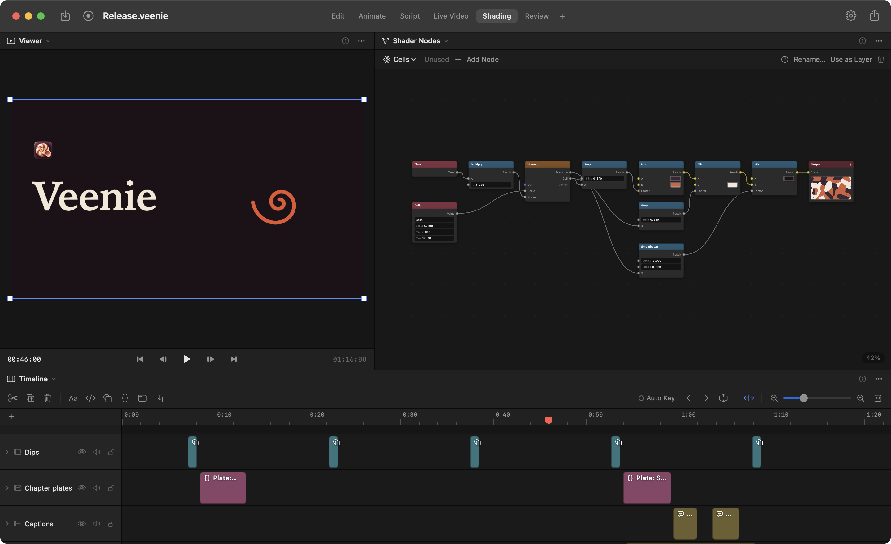
04 — Stage
A desktop that does what you tell it.
Live Video builds a simulated Mac: windows, a dock, a menu bar with a running clock. Windows can be a code editor that types itself, an AI chat that streams its replies, a terminal, a browser, a video call or a notification.
Plan the cursor as a list of actions (move, click, drag, type, scroll) and Veenie works out the path and what each action does to the windows. Add captions, transcribed on your Mac, with the spoken word highlighted.
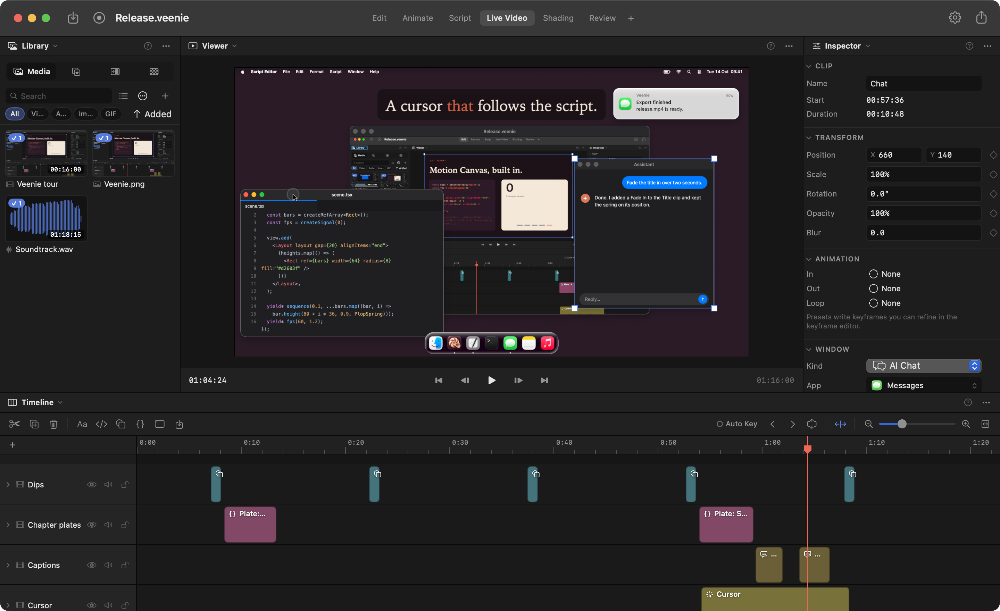
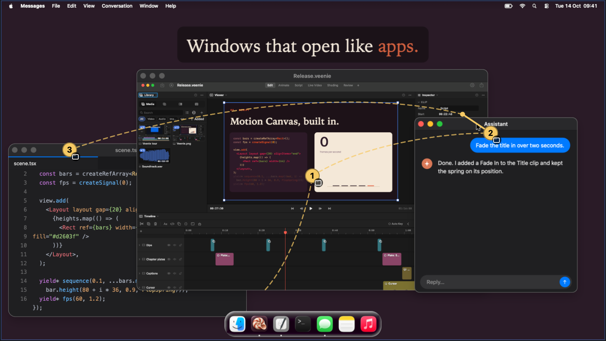
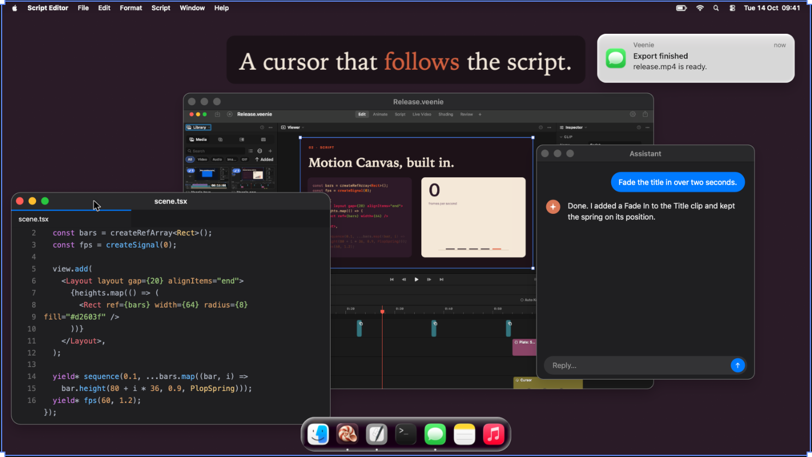
05 — Edit
One renderer for preview and export.
Keyframe any property, then shape the curve in the Keyframes editor. Text, code, shapes and transforms are drawn live by the compositor, so most edits redraw instantly and what you see is what ends up in the file.
A library of backgrounds, elements and transitions, templates to start from, and exports in H.264, HEVC, ProRes or GIF.
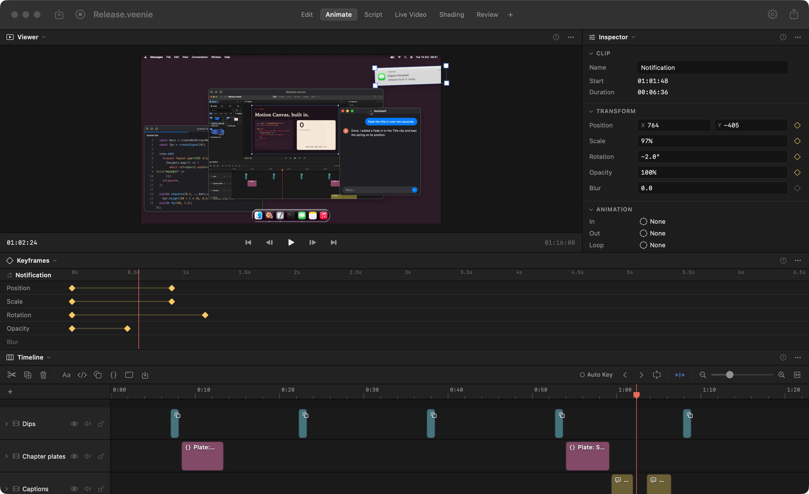
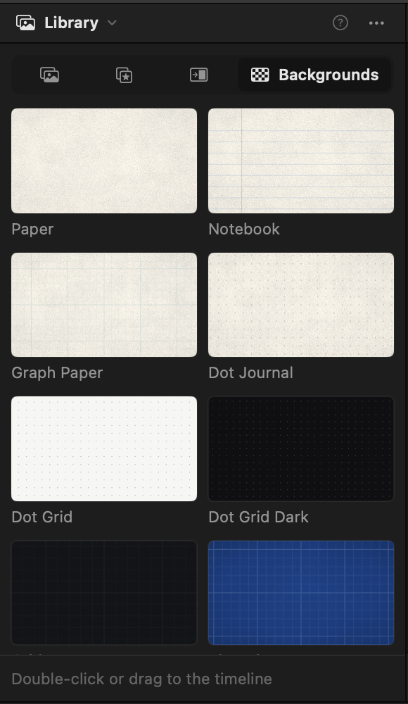
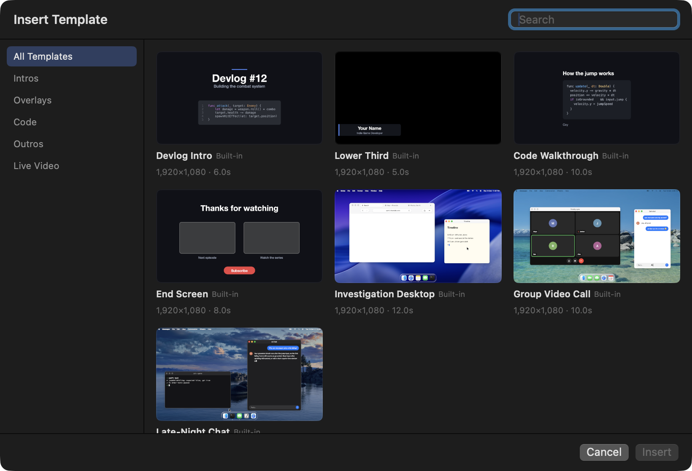
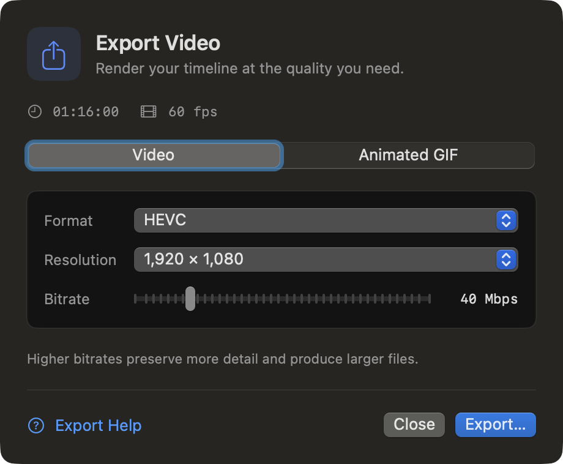
06 — Automate
Ask for the edit. Watch it happen.
The Assistant sidebar edits your project in plain language, using your own Anthropic API key. It can look at rendered frames while it works.
Other agents can connect too: Veenie runs a local, authenticated MCP server with 46 tools for project state, editing, undo, rendering frames and exporting.
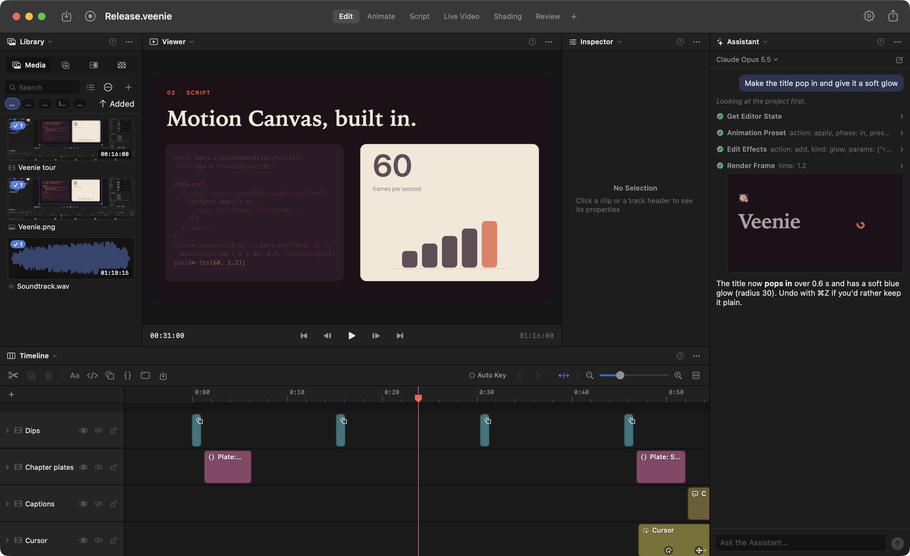
Connect Claude Code
$ claude mcp add --transport http veenie \ http://127.0.0.1:47810/mcp \ --header "Authorization: Bearer <token>"
The server listens on your Mac only. Clients need its token, and editing can be switched off so agents can only read, take screenshots and move around.
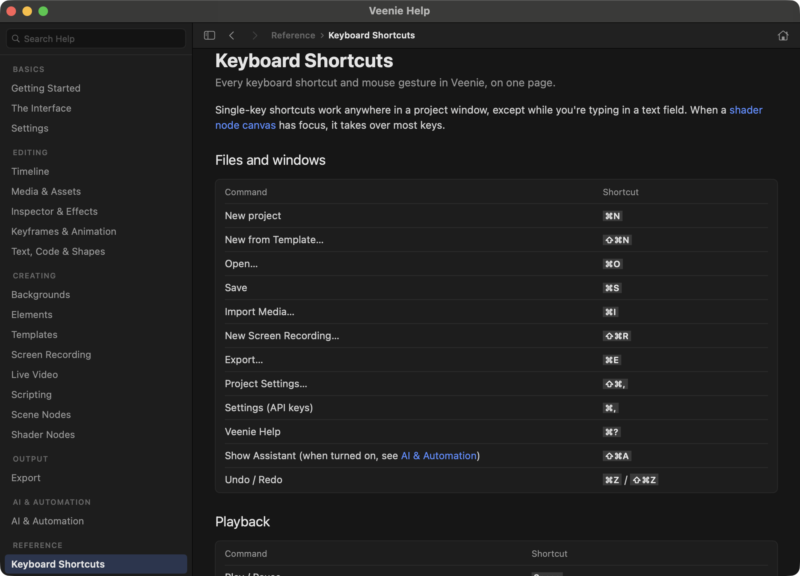
- Requires
- macOS 15 or later
- Built with
- Swift 6, SwiftUI, AVFoundation, Core Image, ScreenCaptureKit, JavaScriptCore
- Export
- H.264, HEVC and ProRes with explicit bitrate. Animated GIF. SRT captions.
- Workspaces
- Edit, Animate, Script, Live Video, Shading, Review. Split, rearrange or add your own.
- Templates
- Investigation Desktop, Group Video Call, Late-Night Chat and more
- Shortcuts
- Space play · S split · ⌘E export · ⇧⌘R record · ⌘? help